이 홀은 핸디캡 5의 PAR4홀로 티샷은 우그린 100M 거리를 향해 티샷을 한다면 가장 안전하게 F/W에 볼을 안착시킬 수 있습니다.
좌측 F/W가 좁게 느껴져 OB를 의식해 우측으로 치우쳐서 샷을 하면 오히려 우측OB가 나오는 경우가 많이 있습니다.
그린의 난이도는 높지 않아 파세이브는 무난하지만 그린 뒤편의 여유 공간이 적어 조심해서 공략해야 하는 홀입니다.
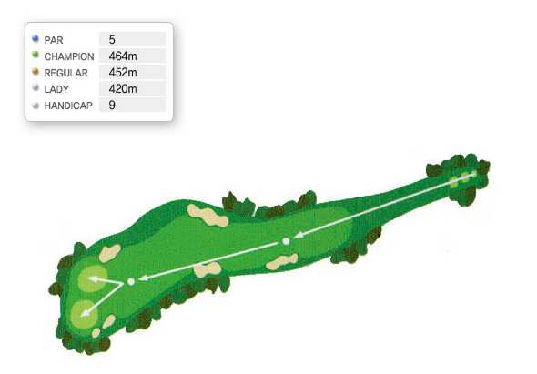
서코스 2번홀은 핸디캡 5인 PAR 5홀이다.
홀 전체가 오르막이기 때문에 멀게 느껴지지만 티샷을 F/W 정중앙을 보고 공략하면 장타자라면 투온이 가능한 길지 않은 파5홀이다.
홀의 좌그린은 난이도가 상당히 높아서 뒤편에 홀이 있을 때에는 써드샷을 짧게 해 오르막 퍼트를 하는게 현명하다.
홀의 우그린은 그다지 어렵지 않으며, 파온이 되면 파는 무난히 지킬 수 있는 홀이다.
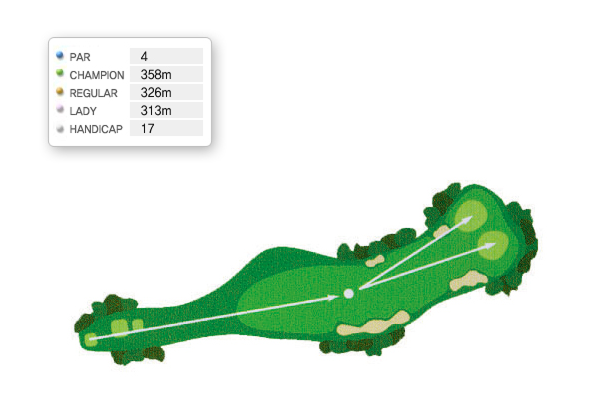
서코스 3번홀은 내리막과 평지로 이루어진 핸디캡 PAR4홀이다.
F/W 좌우측에 벙커가 있고 그린 앞에 큰 소나무가 있는데 F/W 정중앙에 위치하고 있다.
따라서 소나무를 보고 티샷을 공략하면 무나낳게 세컨에 임할 수 있을 것이다.
이 홀의 특징은 홀의 길이가 짧고 세컨샷의 위치가 평지이기 때문에 그린 공략이 쉬우며 그린의 특이할만한 난이도는 없다.
세컨샷만 잘하면 버디도 노려볼만한 홀이다.
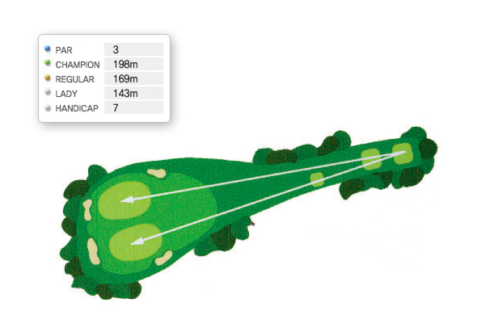
서코스 4번홀은 핸디캡7인 내리막 PAR3홀이다.
홀까지의 거리가 170M 정도 되는데 그린 공략은 우그린이 좌그린 보다 수월하다.
하지만 우그린을 공략한다면 우그린 앞에 있는 깊은 벙커를 조심해야 할 것이다.
벙커의 깊이가 상당하기 때문에 빠지게 되면 파세이브 조차도 힘든 난관에 봉착할 수도 있다. 좌그린의 벙커는 깊지 않아서 벙커에 빠져도 큰 어려움은 없으나 그린이 까다롭고 핀이 앞쪽에 있는 경우 타구가 핀을 넘어서면 심한 내리막 퍼트를 하게 되므로 티샷 시 클럽의 선택이 가장 중요시 되는 홀이다.
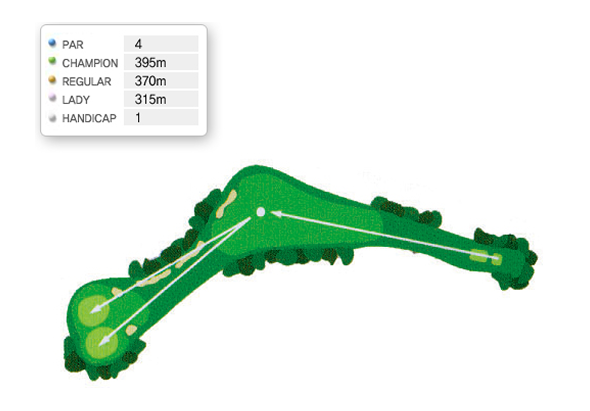
서코스 5번홀은 핸디캡 1번 홀로써 공략이 어려운 도그렉 4홀이다. 첫째 티샷이 공략루트(크로스벙커 옆에 있는 깃발 방향)로 향하지 않을 때는 세컨샷이 원거리로 남고, 특히 우그린 일 때는 오른쪽 OB를 의식하지 않을 수 없기 때문에 세컨샷이 어려워져 파를 세이브 하기 힘들다.
티샷의 방향은 크로스벙커 옆에 있는 깃발 방향이 가장 이상적이지만 왼쪽 OB를 의식해야 하는 어려운 점이 있다.
그래서 티샷 구질이 페이드나 슬라이스가 나는 플레이어는 자신 있게 스윙을 하면 티샷은 무난하다.
하지만 훅이나 드로우 구질이라면 크로스 벙커쪽을 향해 티샷하면 무난할 것이다.
그러면 세컨샷의 거리는 150M 안쪽에서 가능할 것이다.
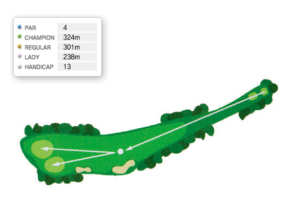
서코스 6번홀은 완만한 오르막과 평지로 이루어진 핸디캡 13의 PAR4홀이다.
F/W 우측편에 위치한 소나무를 보고 티샷을 하면 안정적인 홀 공략이 가능하다. 특히 핀의 위치가 좌그린인 경우 바로 옆이 OB지역이라 세컨샷을 그린 중앙으로 공략하는게 현명한 경기운영 방법이다. 홀의 길이가 짧고 그린의 난이도가 어렵지 않기 때문에 버디도 노려 볼만한 서비스홀이다.
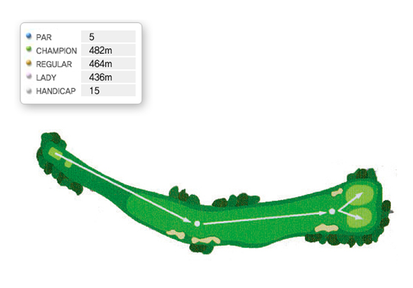
PAR5의 약간 좌측으로 휘어진 롱홀이며 티샷시 좌, 우측 OB와 우측 벙커가 있어 좌중간으로 공략하며 세컨샷은 그린 앞 좌, 우측 벙커에 주의하여 서드샷으로 승부해야 한다.
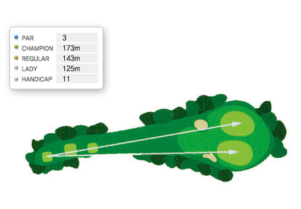
이 홀은 핸디캡 11인 내리막 PAR3홀이다.
좌측은 포대그린이고 우측은 평그린이다.
좌, 우측 그린앞에 벙커가 있고 이 벙커가 큰 함정이 되는 홀이다.
특히 그린 앞쪽에 핀이 위치하고 있을때 내리막 홀이기 때문에 클럽 선택을 작게하는 경향이 있는데, 이렇게 되면 대부분이 벙커에 빠지게 된다.
따라서 실거리에 맞게 클럽을 선택하면 큰 문제는 없는 홀이다. 좌, 우 그린 모두 어려운 경사는 없으며 티샷이 온그린 하면 파는 무난하게 지킬 수 있다.
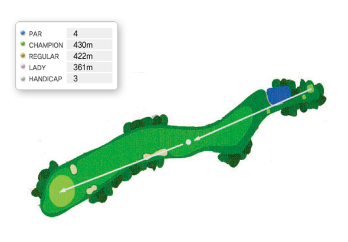
이 홀은 핸디캡 3인 내리막 PAR4홀이다.
티잉그라운드에 서면 숨이 막힐 정도로 F/W가 좁아 보인다.
좌, 우측 모두 OB가 있지만 보기보다 우측이 상당히 넓으므로 티샷은 F/W 우측편을 보고 해야한다.
그린은 원그린인데 홀에서 멀리 떨어져 온이 된다면 쓰리퍼트도 쉽게 나오는 홀이므로 마지막 샷까지 신중함을 요한다.
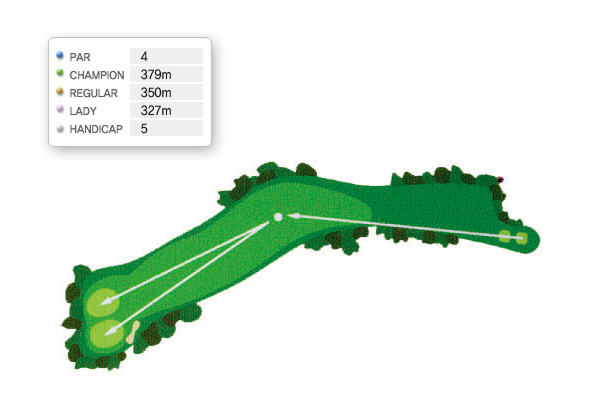
동코스 1번홀은 전체적으로 좌로 굽은 핸디캡 8번의 파5홀이다.
전체적으로 페어웨이가 좁은 편이지만 우측엔 벙커가 있어 페어웨이 좌측을 보고 티샷을 하면 안전하게 페어웨이를 지킬 수 있다.
좌, 우 그린 앞에 벙커가 있고 그린의 난이도는 높지 않으며 파온이 되면 파를 지키는 데는 별 어려움이 없다.
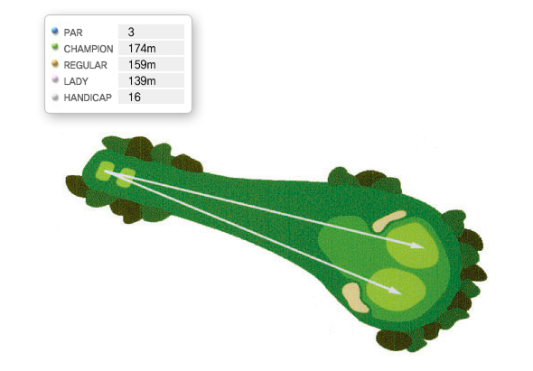
동코스 2번홀은 핸디캡 16번의 파3홀이다.
좌, 우그린의 거리 차이는 거의 없으나 좌그린의 경우 티샷이 훅이 나기 쉬우며, 훅이 나게 되면 좌측벙커나 트러블에 볼이 떨어질 확률이 높다.
따라서 좌그린을 공략할 때에는 중앙을 향해 티샷을 하는 것이 안정적인 코스공략 방법이다.
티샷만 조심하면 좋은 스코어를 기록할 수 있는 홀이다.
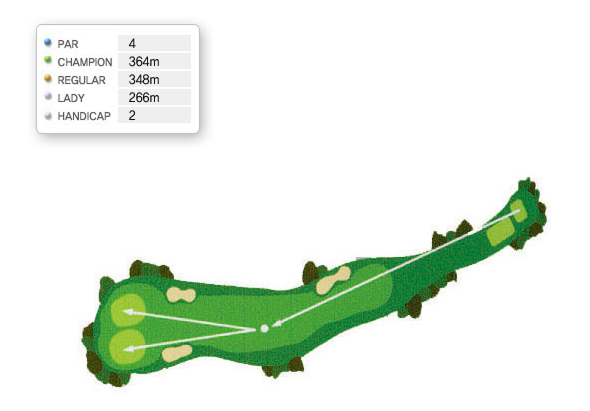
동코스 2번홀은 핸디캡 16번의 파3홀이다.
좌, 우그린의 거리 차이는 거의 없으나 좌그린의 경우 티샷이 훅이 나기 쉬우며, 훅이 나게 되면 좌측벙커나 트러블에 볼이 떨어질 확률이 높다.
따라서 좌그린을 공략할 때에는 중앙을 향해 티샷을 하는 것이 안정적인 코스공략 방법이다.
티샷만 조심하면 좋은 스코어를 기록할 수 있는 홀이다.
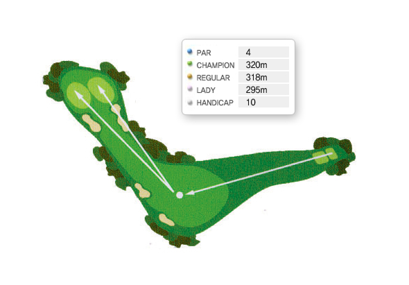
동코스 4번번홀은 길지 않은 파4 홀이다. 하지만 코스설계가 드라이버로 직접공략이 어렵게 만들어진 도그렉 홀이다.
그래서 티샷은 아이언이나 스푼 정도에서 티샷을 결정한다.
티샷의 방향은 맞은편 큰 소나무를 IP지점으로 보고 티샷을 한다.
그러면 120M ~ 100M 정도에서 세컨샷을 하게 되는데 좌그린 경우 그린 바로 옆이 좌측 OB가 잇으므로 좌측 좌깃발이 있을 경우 되도록이면 깃발을 직접 공략하지 말고 그린 중앙을 향해 세커샷을 하면 큰 어려움 없이 파를 지킬 수 있을 것이다.
공격적인 성향의 골퍼라면 티샷을 그린을 향해 직접공략을 해도 무방하지만 단 드라이버 비거리가 260M이상 이어야 한다.
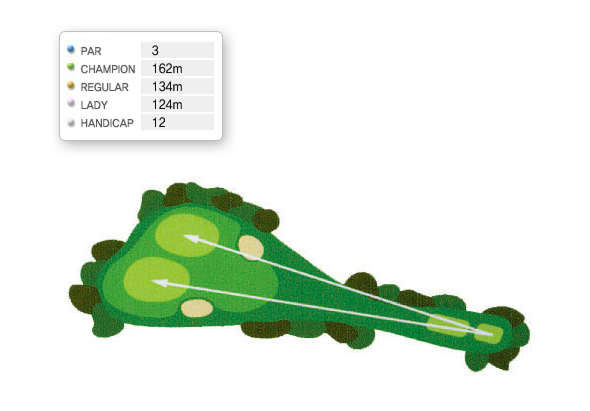
이 홀은 티잉그라운드에서 그린까지 오르막인 핸디캡 12의 파3홀이다.
오르막이기 때문에 클럽 선택만 잘하면 크게 어려움이 없다.
양쪽 그린앞에 벙커가 있어 어느정도 위압감이 있지만 티샷이 짧지만 않으면 아무런 문제가 되지 않지만 방심은 금물이다.
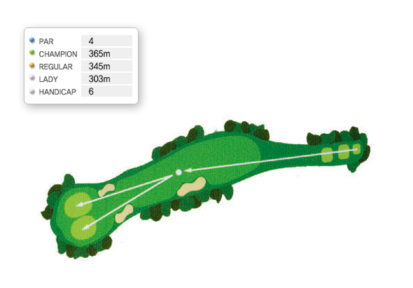
이 홀은 핸디캡 6의 좌측으로 약간 휘어진 오르막 파4홀으로 전형적인 슬라이스홀입니다.
티샷은 그린 앞쪽의 홀라이트를 보고 샷을 한다면 무난하며, 오르막으로 그린의 세로길이가 생각보다 길기 때문에 10M정도 감안하여 클럽을 선택하여야 합니다.
양쪽그린의 경사도는 어렵지 않아 세컨샷의 거리만 잘 조절한다면 무난하게 파세이브를 할 수 있는 홀입니다.
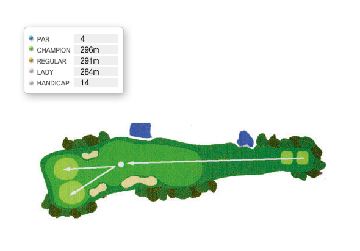
이 홀은 300M가 채 안되는 핸디캡 14의 파4홀이다.
장타자는 버디도 쉽게 나오는 홀이며 티샷이 이 홀의 스코어를 좌우한다고 보면 된다.
티샷만 페어웨이에 안착시키면 짧은 거리에서 세컨샷을 할 수 있으며, 좌, 우 그린이 약간 까다롭지만 투퍼트가 어려울 정도는 아니다.
특히 좌그린의 경우 그린의 우측면이 높으니 세컨샷을 할 때 참고하여 샷을 하면 유용하다.
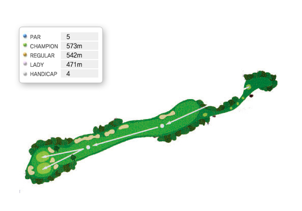
좌, 우측 모두 OB가 있지만 페어웨이 좌측으로 상당히 넓은 안전지대가 있어 이곳을 향해 티샷을 하면 안전하게 공략할 수 있다.
페어웨이 우측으로는 그린까지 많은 벙커가 있고 벙커를 넘어서면 OB지역 이므로 주의를 요한다.
세컨샷도 페어웨이 좌측으로 하는게 안전하다.
좌, 우 그린의 난이도는 크게 어렵지 않으며 우그린 공략 시 볼이 그린을 넘어가지 않도록 조심해야 한다.
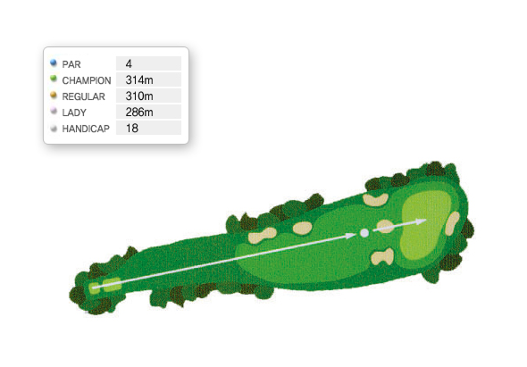
좌, 우측 모두 OB가 있지만 페어웨이 좌측으로 상당히 넓은 안전지대가 있어 이곳을 향해 티샷을 하면 안전하게 공략할 수 있다.
페어웨이 우측으로는 그린까지 많은 벙커가 있고 벙커를 넘어서면 OB지역 이므로 주의를 요한다.
세컨샷도 페어웨이 좌측으로 하는게 안전하다.
좌, 우 그린의 난이도는 크게 어렵지 않으며 우그린 공략 시 볼이 그린을 넘어가지 않도록 조심해야 한다.